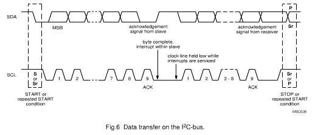
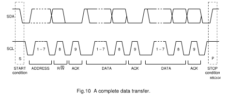
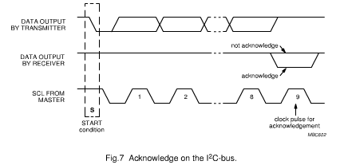
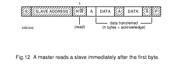
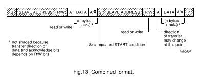

Hardware
Table of Contents
1 I2C
1.1 Characteristic
- multi-master serial single-ended computer bus
- used to attach low-speed peripherials to a motherboad,embedded system
- two bidirectional open-drain lines: Serial Data Line(SDA) and Serial Clock (SCL)
- support 100 kbit/s standard mode, 10 kbit/s low-speed mode, 400 kbit/s Fast mode and 3.4 Mbit/s High Speed mode.
1.2 Transfering data
1.2.1 Byte format
Every byte put on the SDA line must be 8-bits long. The number of bytes that can be transmitted per transfer is unrestricfed. Each byte has to be followed by an acknowledge bit. Data is transferred with the most significant bit(MSB) first. if a slave can't receive or transmit annther complete byte of data until it has performed some other function, for example servicing an internal interrupt, it can hold the clock line SCL LOW to force the master into a wait state. Data transfer then continues when the slave is ready for another byte of data and releases clock line SCL. In some cases, it's permitted to use a different format from the I2C-bus format. Amessage which starts with such an address can be terminated by generation of a STOP condition, even during the transmission of a byte. In this case, no acknowledge is generated.
1.2.2 Acknowledge
Data transfer with acknowledge is obligatory. The acknowledge-related clock pulse is generated by the master. The transmitter releases the SDA line(HIGH) during the acknowledge clock pulse. The receiver must pull down the SDA line during the acknowledge clock pulse so that it remains stable LOW during the HIGH period of this clock pulse. Of course, set-up and hold times must alse be taken into account.






